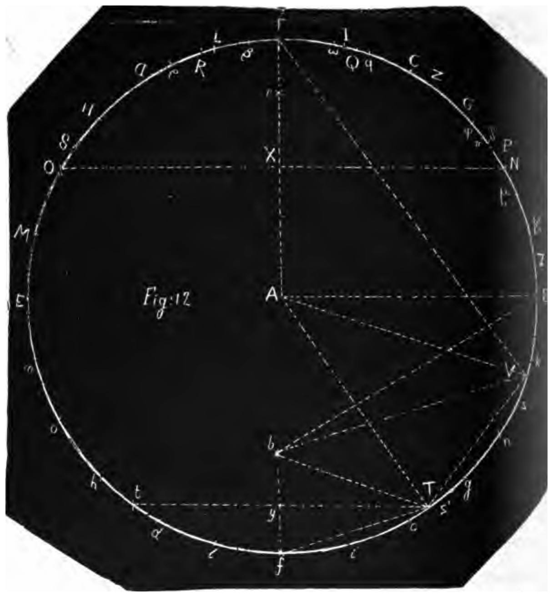

§§ 40–44: Regular Pentagon, Decagon & 120-Part Circle¶
f. 0052 · p. 2340. Prob. To divide the circumference \(BDd\) into five equal parts.
f. 0053 · p. 24

Sol. Remaining as in Problem § 31, make \(Aa = Nb = Ob\) with the 3rd compass (fig. 12). Make \(Bb = BQ\). The arc \(BQ\) will be the fifth part of the circumference.
Dem. If we conceive two straight lines \(NO, AF\) drawn, intersecting at \(X\); because of the equilateral triangles \(FNA, FOA\), the straight line \(FA\) will be bisected at \(X\) (I.10); and likewise \(NO\) (§ 14). Then since arc \(NFO\) is equal to arc \(BCD\) (§ 31), the square of its chord \(NO\) will be equal to the square of the chord \(BD = 3\) (§ 2), and the square of its half \(NX\), namely \((NX)^2 = \frac{3}{4}\) (by Coroll. of Prop. 4, Book II). Moreover the points \(b, A, X\) lie on the same straight line, and the triangle \(NbX\) is right-angled
f. 0054 · p. 25(§§ 12, 13, 14); thus \((Nb)^2 = (Aa)^2 = 2\) (§ 27). Whence \((Xb)^2 = (Nb)^2 - (NX)^2\) (I.47) \(= 2 - \frac{3}{4} = \frac{8}{4} - \frac{3}{4} = \frac{5}{4}\). But by the right angle \(XAB\), which is the same as \(FAB\), we have \((BX)^2 = (AB)^2 + (AX)^2\) (I.47). And \((AX)^2 = \frac{1}{4}(AF)^2\) (by Coroll. II.4). Therefore \((BX)^2 = 1 + \frac{1}{4} = \frac{5}{4} = (Xb)^2\). Hence the straight lines \(BX, Xb\) are equal. Therefore this point b will be the very same that Ptolemy employs in the first Book of the Almagest to inscribe an equilateral and equiangular pentagon and decagon in a circle. See Clavius’s demonstration in the Scholium to Prop. 10 of Book XIII of Euclid. See also the following sections (§ 45 etc.), from which will follow the complete demonstration of this Proposition and the following ones.
41. Prob. To divide the circumference into ten equal parts.
Sol. Remaining as in the preceding Problem (§ 40), make \(Ab = BP\); then \(BP = PQ\), arcs equal to the tenth part of the circumference (fig. 12).
Dem. See XIII.10 of Euclid.
42. Prob. To divide the circumference into one hundred and twenty equal parts.
Sol. Remaining as in Problems §§ 32 and 40, \(QI\) will be the one-hundred-and-twentieth part of the circumference (fig. 12).
Dem. Since arc \(BI\) is equal to five twenty-fourths of the circumference (§ 32), and arc \(BQ\) is equal to one fifth; therefore \(QI = BI - BQ = \frac{5}{24} - \frac{1}{5} = \frac{25 - 24}{120} = \frac{1}{120}\).
43. Whoever wishes may, with only four compasses—that is, four openings of one compass—and with only two points taken outside the circumference, namely with only the two points a and b, divide the circumference of the circle into one hundred and twenty equal parts.
For having divided the circumference into 24 parts with point a and three compasses (Prob. § 32), and having found point b (§ 40), let us make with the fourth compass \(Ab = BP = PQ = QR = RS\), to which \(SE\) will also be equal (§ 41). Now, to divide the arc \(NG\) into five equal parts, each of which will be a one-hundred-and-twentieth, make \(Ab = Lq = qp = I\pi = O\rho = \rho\omega = \omega\varphi\). Thus
f. 0055 · p. 26arc \(NG\) will be divided into five equal parts. In the same way all the other arcs \(GC, CI\), etc., can be divided.
Dem. Since \(BQ = RE\), \(BF = FE\), \(IF = FL\), it will also be \(IQ = LR\), and since \(Lq = QR\), it will also be \(Qq = LR = QI\). In the same way, since \(QP = qp\), it will also be \(Qq = Pp = QI\). Likewise, because \(I\pi = QP\), \(\pi P = QI\). Then since \(O\omega = BQ\) and \(OI = IB\), we shall also have \(I\omega = QI\). Moreover, because \(\omega\varphi = I\pi\), we shall have \(I\omega = \varphi\pi = QI\). Next, since \(O\varphi = O\rho + \rho\omega + \omega\varphi = BP + PQ + QR = BR\), subtracting on both sides the equal arcs \(OG, BL\), we obtain the remainder \(G\varphi = LR = QI\). Finally, because \(BI = LN\), subtracting the equal arcs \(BQ, Lp\), the remainder will be \(QI = Np\). Thus arc \(NG\) has been divided into the five arcs \(Np, pP, P\pi, \pi\varphi, \varphi G\), each equal to arc \(QI\), and therefore equal to one another. Since \(NG\) is a twenty-fourth part of the circumference (§ 32), each fifth part of it will be a one-hundred-and-twentieth of the circumference.
44. We have now therefore divided with the compass alone the circumference into all those equal parts which the ancients obtained by inscribing in the circle the five regular polygons—triangle, square, pentagon, hexagon, and decagon—employing compass and straightedge together. Moreover it has proved exceedingly convenient to have been able to obtain all this by taking only two points outside the circumference, namely a and b, and employing only four openings of a compass, or four compasses (§ 43, 8). Whoever compares this method with the known method will be able to judge of its simplicity and expedition, and of its accuracy in practice.